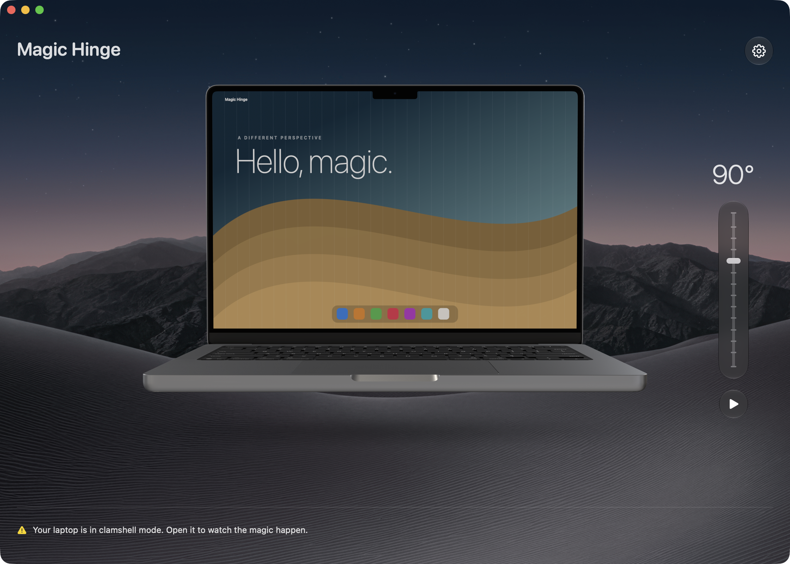

Follow the hinge.
A readable hinge sensor connects the effect to your MacBook’s movement. Pause it anytime from the menu bar. External displays stay clear.
A SMALL DELIGHT FOR YOUR MAC
Tilt your MacBook screen. Watch your desktop bend, soften and fade like frosted glass. Hold still, and everything settles back into place.
Version 2.3.0 is being prepared.
Free & open source · Apple silicon · macOS 14.2 or later

A readable hinge sensor connects the effect to your MacBook’s movement. Pause it anytime from the menu bar. External displays stay clear.
Drag the 3D laptop, use the angle slider, or press the arrow keys. Double-click to open or close. Hold Shift to slow down the transition.
Screen images stay in your Mac’s memory. They are never saved or uploaded. No analytics, no account, and no accessibility permission required.
MAKE YOURSELF AT HOME
Open the disk image and drag Magic Hinge into Applications. Or use Homebrew:
brew install --cask roelvangils/tap/magic-hingeThe app speaks English and Dutch. Screen Recording is optional; the simulator works with an example image. Models download directly from Apple and remain available offline after downloading.
The effect clears on sleep, screen lock and sensor loss. It does not prevent sleep or draw over the secure login screen. Update checks are optional; automatic downloads and installation are off.
Automatic hinge control depends on the sensor available in your Mac, detected at runtime. The simulator remains available when no sensor is readable.
Magic Hinge by Roel Van Gils. Original code under the MIT license. Apple supplies the original 3D models; Apple’s terms apply. Wallpapers by Basic Apple Guy, used with permission. Studio lighting from Poly Haven (CC0). Updates by Sparkle; permission guidance by PermissionFlow.
Third-party assets are excluded from the code’s MIT license. See the complete credits and terms.